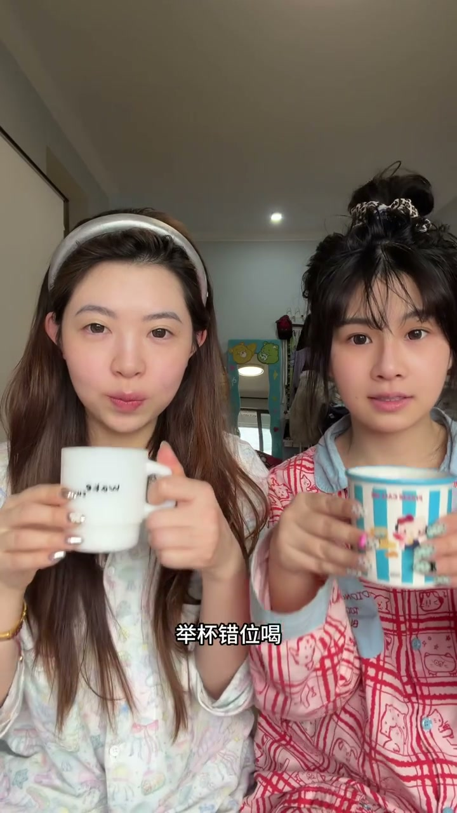
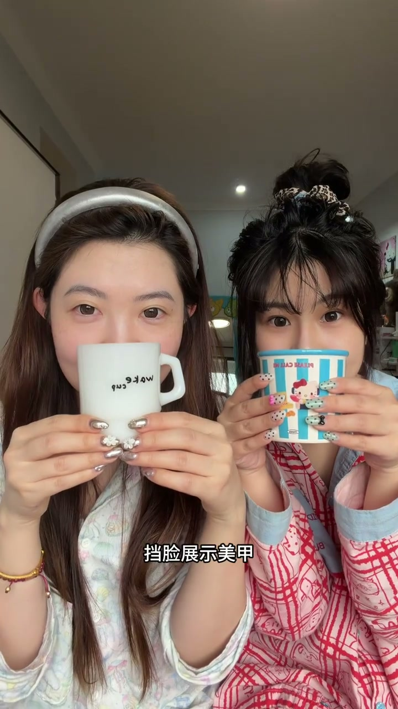
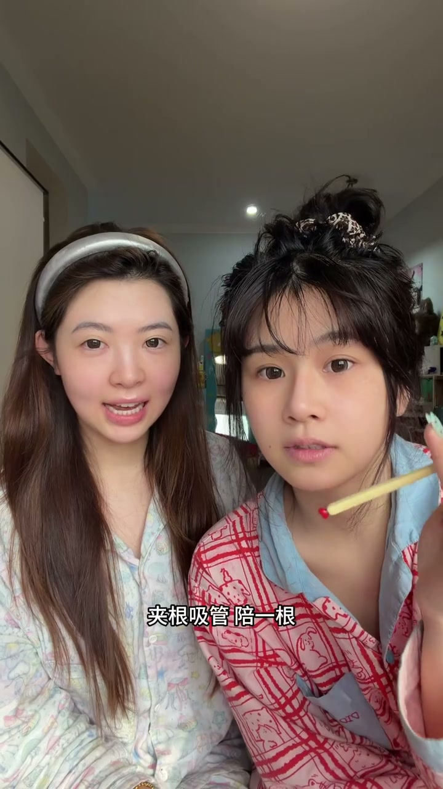
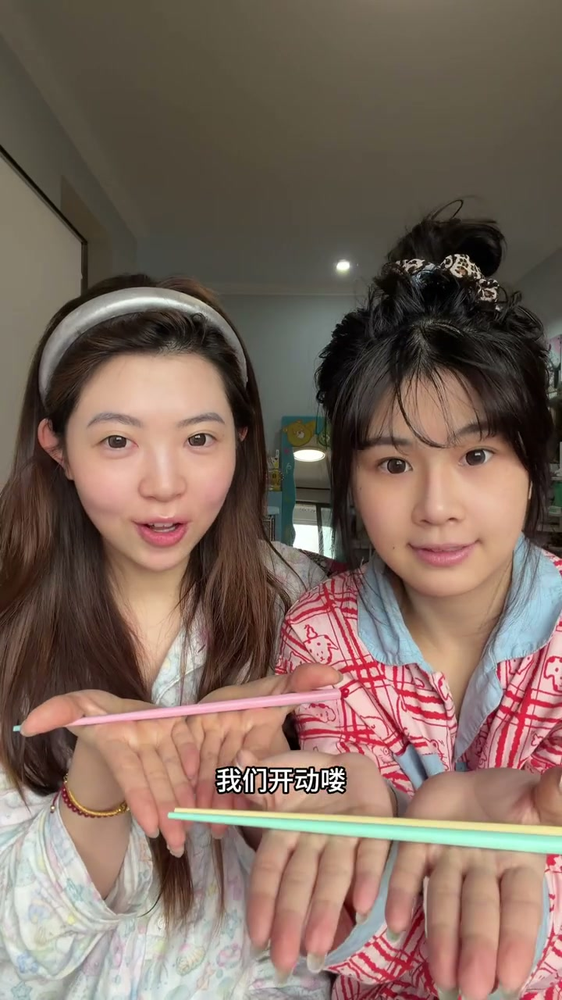
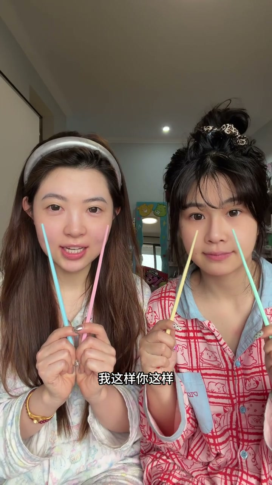
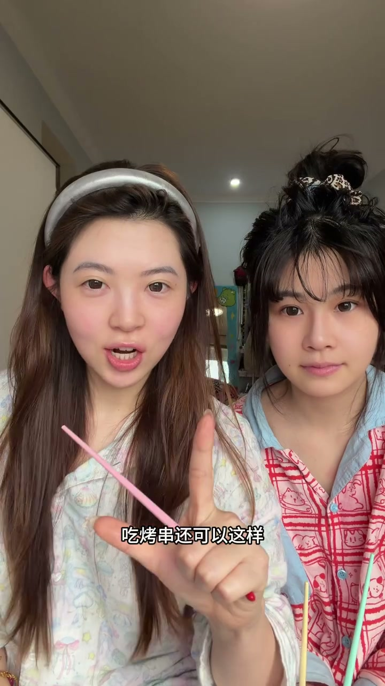

举杯、错位喝、展示美甲
00:03举杯：两人一起举杯，庆祝感；错位喝：一前一后错开举杯，画面更有层次。
00:07长脸展示美甲：托腮侧脸，把手部美甲秀出来。

[00:04] 举杯+错位喝：一前一后，层次感
Lifting glasses + drinking off-beat: one in front, one behind — layered depth
[00:08] 长脸展示美甲：托腮侧脸秀美甲
Long-face nail showcase: cheek on hand, side profile showing the nails
吸管互动与开动瞬间
00:09夹根吸管：咬住吸管看镜头，俏皮又自然。
00:13我们开动咯：准备开吃的一刻抓拍，最有生活感。

[00:10] 夹根吸管：咬住看镜头，俏皮
Biting a straw and looking at the lens — playful

[00:14] 开动瞬间：准备开吃的生活感
The moment of digging in: the everyday feel of starting a meal
委屈脸合影与烤串互动
00:15我这样、你这样，一起委屈脸：双人配合做表情，可爱合影。
00:19吃烤串还可以这样：举着烤串互动，动作自然有趣。

[00:17] 一起委屈脸：双人表情合影
Two pouting faces together: a duo expression photo

[00:20] 吃烤串互动：举着烤串拍照
Skewer interaction: posing with a grilled skewer
展示美食与筷子框脸
00:23展示美食：把美食摆到镜头前入镜；用筷子框住脸——两根筷子在脸前比框，既展示食物又显脸小。

[00:24] 展示美食：食物入镜
Showing the food: putting the dish in frame
[00:25] 用筷子框住脸：显脸小又出片
Framing the face with chopsticks: slimming and photogenic
姐妹吃饭照不靠大动作，靠小幅度互动——举杯、咬吸管、委屈脸，手上有道具、表情有情绪。